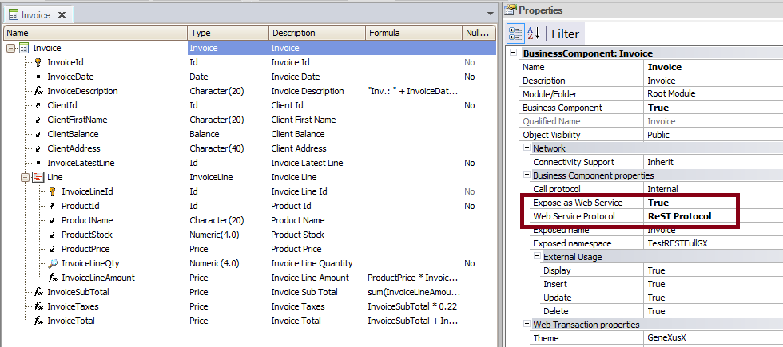

This document explains how to retrieve data from a Business Component exposed as a Rest web services in GeneXus. First, let's see the basic guidelines: How do I call the Rest service in GeneXus?Use the HttpClient data type. Which HTTP method should I use to retrieve the data?The HTTP method used for retrieving the data is the GET HTTP method. Which kind of information is exposed by the web service so I can consume it?You can get a record given its Primary Key. However, as since GeneXus X Evolution 2 you cannot retrieve all the data of the table (you can't execute a GET of all the records, e.g: <url base>/rest/Products), nor get the data from a given Foreign Key (<url base>/rest/Invoices?ClientId=234), or the data for a given Description Attribute (e.g:<url base>/rest/Products?ProductName=SmartPhone). This restriction on the information provided by the Rest BC is due to security reasons. Which is the URL format to execute the GET?<server uri>/rest/<module>/<bc name>/<param1>,<param2>,..,<paramN> Where <param1>,<param2>,..,<paramN> is the compound Primary Key. ExampleThe following figure shows the Invoice Business Component transaction that is exposed as a Rest web service:  In this example, we want to get the Invoice whose InvoiceId=5 Example code
&httpclient.Host= &server
&httpclient.Port = &port
&httpclient.BaseUrl = &urlbase
&httpclient.Execute('GET','Invoice/5')
if &httpclient.StatusCode = 200
&result = &httpclient.ToString()
else
msg("There was an error retrieving the data: " + &httpclient.StatusCode.ToString())
endif
Download the sample from Sample GET data using a Rest BC Notes:
See AlsoBusiness Components as Rest web services in GeneXus
|
| Backlinks | |
| HowTo: Updating data using a BC exposed as a Rest service | Toc:Rest web services in GeneXus |